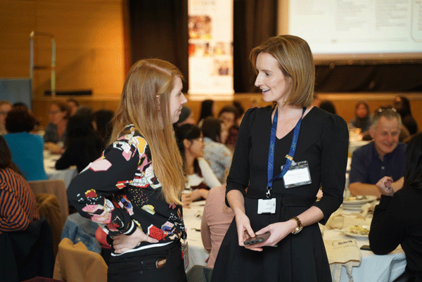

SALI: Professorship in Inclusive Computer Science

The School of Computer Science at TU Dublin greatly welcomes last weeks announcement by Minister for Higher Education Mary Mitchell O’Connor TD of the funding for a Professorship in Inclusive Computer Science - awarded under the Senior Academic Leadership Initiative (SALI), an initiative which aims to accelerate gender balance objectives at senior academic leadership levels in Irish higher education institutions. TU Dublin has also been awarded funding for a Professorship in Public Trust in the Media, Arts and Technology.
Dr Deirdre Lillis, Head of the School of Computer Science City Campus along with Dr Susan McKeever, senior lecturer School of Computer Science, led the submission of the Professorship in Inclusive Computer Science.
About the creation of the new role Dr Lillis said:
“In 2020, the vast majority of our information technology is designed by men and this has far-reaching consequences for diversity and inclusion across all dimensions. The focus of this professorship in inclusive computer science is to transform the learning experience of young women pursuing degrees and careers in computer science, ultimately diversifying the talent pipeline into a critically important sector.”
Dr Susan McKeever & Dr Deirdre Lillis pictured receiving the Informatics Europe Award for the development of female faculty careers
The Professorship in Inclusive Computer Science education is a longer-term strategic initiative which aims to increase the pipeline of females into academic and research careers as well as creating a gender balance within a crucially important economic sector. The Professorship is differentiated from existing initiatives in industry and academia by focussing on curriculum and learning environment reform within computer science faculties. The Professor in Inclusive Computer Science will work in a TU Dublin on both a national and European context to increase the participation of females in third-level Computer Science programmes by leveraging the distinctive flexible programme provision already available within the School.
ESTeEM founder and orgainser Dr Leslie Shoemaker with TU Dubin President Prof. David FitzPatrick
In the past five years, TU Dublin has made significant progress in gender balance, amongst both staff and students and it is acknowledged that we are now at a crucial stage to build on this initial momentum and activity. The appointments under the SALI initiative will add to the range of initiatives currently underway to advance gender equality among staff and students in the School of Computer Science. The creation of this new role is very much part of a broader strategy that has been at play within the School over the last few years. During this time much has been achieved by our team of dedicated and passionate staff, some of these achievements have included:
- Receiving the 2019 Informatics Europe Minerva award for our work in developing the careers of female faculty.
- Initiating the Ingenics network of staff in CS faculties across Ireland working to increase female representation.
- Our ESTEEM mentoring programme, jointly run with the College of Engineering since 2017, was singled out by the Athena Swan reviewers as an example of best practice
TU Dublin is part of the Ingenics network
As well as running initiatives within the School of Computer Science much of our work is also focussed on an international level.
- In the past 5 years we have secured over €4 million in Erasmus+ and Marie Curie RISE funding for curriculum reform projects including
○ Ethics4EU- Ethical Computer Science Education for Europe
○ HubLinked- Strengthening Europe’s Software Innovation capacity
○ GETM3 - Global Entrepreneurial Talent Management
○ FOSS4SMEs- Free and Open Software for SMEs.
○ Quality Blended Learning - Boosting Blended Educators’ Competences
- Two further European projects are under development for 2020 - Erasmus+ Knowledge Alliance proposal “EngenderIT” and a COST Action entitled “Gender Balance and Inclusiveness in Informatics/Computer Science.”
The creation of this new role is a reminder that our work in this area continues into 2020 and onwards. Dr Susan McKeever, who was instrumental in creating this new role, echoes this sentiment:
“We still do not have enough women choosing to follow studies and careers in the tech sector – a sector where the systems and technologies that affect every aspects of our lives are produced. We can’t be passive about changing this - We have to drive change by offering environments, programmes and jobs that are attractive and supportive to both genders. This professorship will now be part of driving this change, focusing on attracting more female students into computer science, and ultimately into the technology sector.”